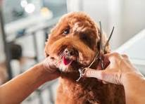

About Paws & Polish

Paws & Polish Dog Grooming is a professional dog grooming business dedicated to keeping dogs clean, comfortable and looking their best.
We understand that every dog is different. That is why we provide caring and personalised grooming services based on the needs of each dog.
Our Story
Paws & Polish was created from a love for dogs and a passion for providing quality grooming services. Our aim is to create a friendly and welcoming environment where dogs can receive professional care.
From regular baths and brushing to full grooming services, we focus on making every visit a positive experience for both dogs and their owners.
Our Mission
Our mission is to provide reliable, professional and caring grooming services that promote the cleanliness, comfort and wellbeing of every dog in our care.
Our Vision
Our vision is to become a trusted dog grooming business known for excellent service, responsible pet care and creating happy and healthy grooming experiences for dogs.
Our Values
- Care: We treat every dog with patience and kindness.
- Professionalism: We aim to provide high-quality grooming services.
- Safety: We prioritise the comfort and safety of every dog.
- Cleanliness: We maintain a clean and hygienic grooming environment.
- Customer Satisfaction: We aim to provide a positive experience for dogs and their owners.
Give Your Dog the Care They Deserve
Ready to give your furry friend a fresh new look? Book an appointment with Paws & Polish today!